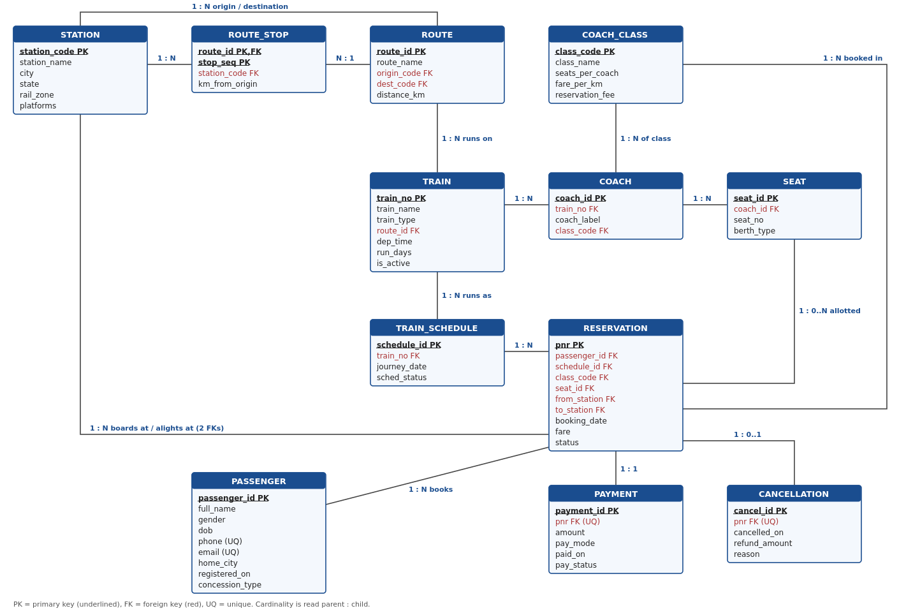

Railway Reservation and Passenger Service Management System
Case Study 6 | BCSE302P – Database Systems Lab | Class No. VL20262701033456 | Slot L51+L52
| Register No. | Name | Contribution |
|---|
| | | |
| | | |
| | | |
DBMS: Oracle Database (tested on Oracle 23ai Free through SQL*Plus). Script: railway_case_study6.sql (re-runnable; it drops and recreates every object it owns).
1. Introduction
A national railway organisation keeps reservation records in manual registers and spreadsheets. That causes duplicate seat allocation, inconsistent passenger details, slow cancellation processing and no reliable view of how full each train runs. This project replaces those records with a normalised relational database. It manages stations, routes, trains, coaches, seats, journeys, passengers, reservations, payments and cancellations. On top of the data it provides analytical queries, views and a Train Capacity Risk Identification module that tells management which trains need additional capacity.
2. Requirement Analysis
2.1 Functional requirements
| ID | Requirement |
|---|
| FR1 | Maintain stations, routes and the ordered list of stops (with distance) on each route. |
| FR2 | Maintain trains, the route each train runs on, its coach composition and every seat/berth in each coach. |
| FR3 | Create a journey (schedule) for each date a train runs, with its status. |
| FR4 | Register passengers with validated contact details and concession category. |
| FR5 | Book a ticket: allocate a free seat of the requested class automatically, otherwise place the passenger on the waitlist. |
| FR6 | Compute the fare from the travelled distance and class, and record the payment. |
| FR7 | Cancel a ticket: compute the refund from the time left before departure, release the seat, and confirm the first waitlisted passenger. |
| FR8 | Modify a reservation (e.g. change boarding point) with automatic fare recalculation. |
| FR9 | Produce reports: train-wise reservations, station traffic, route/coach utilisation, cancellations, revenue, passenger frequency. |
| FR10 | Classify trains as CAPACITY REQUIRED / HIGH DEMAND / NORMAL to support capacity planning. |
2.2 Business rules
| ID | Rule | Enforced by |
|---|
| BR1 | Station codes are unique upper-case codes. | PK + CHECK |
| BR2 | A route has different origin and destination; a station appears at most once on a route. | CHECK, UNIQUE(route_id, station_code) |
| BR3 | A train runs on exactly one route; a route can have many trains. | FK train.route_id NOT NULL |
| BR4 | Coach labels are unique within a train; every coach belongs to one class. | UNIQUE(train_no, coach_label), FK |
| BR5 | A train runs at most once per date. | UNIQUE(train_no, journey_date) |
| BR6 | Phone is a 10-digit Indian mobile number; phone and email are unique. | CHECK (REGEXP_LIKE), UNIQUE |
| BR7 | A seat can be sold only once per journey. | Function-based UNIQUE index |
| BR8 | A passenger can hold only one active ticket per journey. | Function-based UNIQUE index |
| BR9 | CONFIRMED/COMPLETED tickets must have a seat; WAITLIST/CANCELLED tickets must not. | CHECK ck_res_seat_status |
| BR10 | The boarding station must come before the destination on the train's route. | Trigger |
| BR11 | The allotted seat must belong to a coach of the same train and the booked class. | Trigger |
| BR12 | A ticket cannot be booked after the journey date. | Trigger |
| BR13 | Fare = max(distance, 50 km) × class fare/km + reservation fee. | Trigger |
| BR14 | Every reservation has exactly one payment; it has at most one cancellation. | UNIQUE FK pnr |
| BR15 | Refund: waitlist 100%, ≥48 h 90%, ≥24 h 75%, ≥4 h 50%, otherwise nil. | Procedure cancel_ticket |
| BR16 | A passenger with booking history cannot be deleted. | FK (no cascade) |
2.3 Assumptions
- One reservation (PNR) is one passenger on one seat. A group booking is several PNRs.
- A seat is held for the whole journey of the train; segment-wise seat reuse is out of scope.
- Seats per coach are scaled down (CC 12, SL 12, 3A 10, 2A 8, EC 8, 1A 4) so that occupancy patterns are visible with a manageable data volume.
- A waitlisted ticket that is not confirmed by departure stays WAITLIST and is fully refunded. It is counted as unserved demand.
3. Database Design
3.1 Entities and attributes
| Entity | Attributes (PK underlined) | Description |
|---|
| STATION | station_code, station_name, city, state, rail_zone, platforms | Railway station |
| ROUTE | route_id, route_name, origin_code, dest_code, distance_km | Corridor between two stations |
| ROUTE_STOP | route_id, stop_seq, station_code, km_from_origin | Ordered stops of a route (associative entity) |
| TRAIN | train_no, train_name, train_type, route_id, dep_time, run_days, is_active | Train service |
| COACH_CLASS | class_code, class_name, seats_per_coach, fare_per_km, reservation_fee | Travel class and fare rule |
| COACH | coach_id, train_no, coach_label, class_code | Coach attached to a train |
| SEAT | seat_id, coach_id, seat_no, berth_type | Seat or berth in a coach |
| TRAIN_SCHEDULE | schedule_id, train_no, journey_date, sched_status | One run of a train on a date |
| PASSENGER | passenger_id, full_name, gender, dob, phone, email, home_city, registered_on, concession_type | Registered traveller |
| RESERVATION | pnr, passenger_id, schedule_id, class_code, seat_id, from_station, to_station, booking_date, fare, status | Ticket; status is the ticket status |
| PAYMENT | payment_id, pnr, amount, pay_mode, paid_on, pay_status | Payment for a ticket |
| CANCELLATION | cancel_id, pnr, cancelled_on, refund_amount, reason | Cancellation and refund |
3.2 Relationships and cardinalities
| Relationship | Cardinality | Participation / note |
|---|
| ROUTE has ROUTE_STOP | 1 : N | Total on ROUTE_STOP side |
| STATION is a ROUTE_STOP | 1 : N | Resolves M:N between ROUTE and STATION |
| STATION is origin / destination of ROUTE | 1 : N (twice) | Two separate FKs |
| ROUTE is run by TRAIN | 1 : N | Every train must have a route |
| TRAIN has COACH | 1 : N | COACH depends on TRAIN (cascade delete) |
| COACH_CLASS classifies COACH | 1 : N | |
| COACH contains SEAT | 1 : N | SEAT depends on COACH |
| TRAIN runs as TRAIN_SCHEDULE | 1 : N | |
| TRAIN_SCHEDULE has RESERVATION | 1 : N | |
| PASSENGER books RESERVATION | 1 : N | |
| SEAT allotted to RESERVATION | 1 : 0..N | Optional on RESERVATION (waitlist); at most one active per journey |
| COACH_CLASS booked in RESERVATION | 1 : N | |
| STATION boards / alights RESERVATION | 1 : N (twice) | from_station, to_station |
| RESERVATION paid by PAYMENT | 1 : 1 | UNIQUE pnr in PAYMENT |
| RESERVATION cancelled by CANCELLATION | 1 : 0..1 | UNIQUE pnr in CANCELLATION |
3.3 ER diagram

3.4 Relational schema
STATION (station_code, station_name, city, state, rail_zone, platforms)
ROUTE (route_id, route_name, origin_code→STATION, dest_code→STATION, distance_km)
ROUTE_STOP (route_id→ROUTE, stop_seq, station_code→STATION, km_from_origin)
TRAIN (train_no, train_name, train_type, route_id→ROUTE, dep_time, run_days, is_active)
COACH_CLASS (class_code, class_name, seats_per_coach, fare_per_km, reservation_fee)
COACH (coach_id, train_no→TRAIN, coach_label, class_code→COACH_CLASS)
SEAT (seat_id, coach_id→COACH, seat_no, berth_type)
TRAIN_SCHEDULE (schedule_id, train_no→TRAIN, journey_date, sched_status)
PASSENGER (passenger_id, full_name, gender, dob, phone, email, home_city, registered_on, concession_type)
RESERVATION (pnr, passenger_id→PASSENGER, schedule_id→TRAIN_SCHEDULE, class_code→COACH_CLASS,
seat_id→SEAT, from_station→STATION, to_station→STATION, booking_date, fare, status)
PAYMENT (payment_id, pnr→RESERVATION [unique], amount, pay_mode, paid_on, pay_status)
CANCELLATION (cancel_id, pnr→RESERVATION [unique], cancelled_on, refund_amount, reason)
Alternate keys: COACH(train_no, coach_label), SEAT(coach_id, seat_no), TRAIN_SCHEDULE(train_no, journey_date),
ROUTE_STOP(route_id, station_code), PASSENGER(phone), PASSENGER(email), ROUTE(route_name)
3.5 Normalisation
- 1NF: every attribute is atomic. Stops of a route are stored as rows in ROUTE_STOP, not as a list in ROUTE. Seats are rows in SEAT, not a count.
- 2NF: the only composite key is ROUTE_STOP(route_id, stop_seq). Both station_code and km_from_origin depend on the whole key (a stop position), not on route_id alone.
- 3NF / BCNF: there are no transitive dependencies. The fare rate depends on class, so it lives in COACH_CLASS, not in COACH or RESERVATION. Route distance and station names are not repeated in TRAIN or RESERVATION. Refund details live in CANCELLATION, not in RESERVATION, which avoids NULL-heavy columns. Every determinant is a candidate key.
- Controlled redundancy:
reservation.fare is stored even though it can be derived. Fare rules change over time, and a ticket must keep the price charged at booking.
3.6 Key design decisions
- TRAIN_SCHEDULE separates a train from its journeys. Occupancy, waitlist and cancellations are per journey, and the same seat is resold on every date.
- Seat uniqueness uses a function-based unique index. The index is
(CASE WHEN seat_id IS NOT NULL THEN schedule_id END, seat_id). A plain UNIQUE(schedule_id, seat_id) would reject two waitlisted tickets, because Oracle treats (101, NULL) twice as a duplicate.
- Cross-table rules (BR10–BR13) are in one BEFORE trigger. CHECK constraints cannot read other tables.
- Risk thresholds are stored in a table (RISK_THRESHOLD), not hard-coded, so management can tune the rules without changing code.
4. Implementation (DDL, DML, Constraints)
4.1 Constraints used
| Type | Count | Examples |
|---|
| PRIMARY KEY | 12 (+2 in risk module) | pk_station, pk_route_stop (composite), pk_reservation |
| FOREIGN KEY | 17 (+1 in risk module) | fk_res_seat, fk_res_from / fk_res_to (two FKs to STATION), fk_coach_train ON DELETE CASCADE |
| UNIQUE | 10 + 2 function-based indexes | uq_sched(train_no, journey_date), ux_res_seat_journey |
| CHECK | 30 | REGEXP_LIKE on phone, email, dep_time, run_days; domain lists for status, class, berth; ranges for platforms, fare |
| NOT NULL / DEFAULT | — | status DEFAULT 'CONFIRMED', booking_date DEFAULT TRUNC(SYSDATE) |
| Trigger | 1 | trg_reservation_validate (BR10–BR13) |
4.2 Sample data loaded
| Table | Rows | Table | Rows |
|---|
| STATION | 14 | SEAT (INSERT … SELECT with CONNECT BY) | 320 |
| ROUTE / ROUTE_STOP | 4 / 21 | TRAIN_SCHEDULE | 27 (+1 demo) |
| TRAIN | 9 | PASSENGER | 150 |
| COACH_CLASS | 6 | RESERVATION | 768 (+9 demo) |
| COACH | 30 | PAYMENT / CANCELLATION | 768 / 35 (INSERT … SELECT) |
Each train has two completed journeys (Sep–Oct 2026) and one upcoming journey. The trains were given deliberately different demand profiles: sold-out with waitlist, sold-out with frequent cancellations, steady, and under-used. A passenger never travels on two journeys on the same day.
[Screenshot: table creation output and the row-count query in Part 2]
4.3 Structure modification (ALTER)
ALTER TABLE passenger ADD (concession_type VARCHAR2(10) DEFAULT 'NONE' NOT NULL CONSTRAINT ck_pass_concession CHECK (...));
ALTER TABLE station MODIFY (station_name VARCHAR2(80));
ALTER TABLE passenger RENAME COLUMN city TO home_city;
ALTER TABLE train ADD CONSTRAINT uq_train_name UNIQUE (train_name);
4.4 Modification and deletion
- Concession category is derived from age with UPDATE + MONTHS_BETWEEN.
- Timetable change:
UPDATE train SET dep_time='07:40'.
- Reservation modification: PNR 4200000071 changed its boarding point from MAS to KPD. Setting fare to NULL makes the trigger recompute it: ₹561 → ₹374. The payment is updated to match.
- DELETE of a passenger with no bookings succeeds. DELETE of a passenger with bookings is rejected (BR16).
4.5 Integrity enforcement tests (each is expected to fail)
| Test | Error raised |
|---|
| Insert passenger with phone '12345' | ORA-02290 check constraint CK_PASS_PHONE |
| Sell an already-sold seat on journey 101 | ORA-00001 unique constraint UX_RES_SEAT_JOURNEY |
| Allot a seat of train 12677 on a 12639 journey | ORA-20003 seat does not belong to train (trigger) |
| Book SBC → MAS on a MAS → SBC train | ORA-20002 boarding must come before destination (trigger) |
| CONFIRMED ticket without a seat | ORA-02290 CK_RES_SEAT_STATUS |
| Delete passenger 1 (has tickets) | ORA-02292 child record found |
| Route stop with unknown station 'XYZ' | ORA-02291 parent key not found |
[Screenshot: Part 5 output showing the seven rejected statements]
4.6 Seat allocation and cancellation processing
book_ticket picks the lowest free seat of the requested class on that journey (NOT EXISTS subquery) or issues a WAITLIST ticket, and records the payment. cancel_ticket applies BR15, releases the seat, marks the payment refunded, and promotes the earliest waitlisted ticket of the same journey and class onto the released seat.
Demo: nine passengers booked the 8-seat EC coach of 12677 (journey 7 days ahead). PNRs 4200001001–1008 were CONFIRMED and 4200001009 was WAITLIST. Cancelling 4200001001 refunded ₹1,588.50 (90% of ₹1,765) and automatically confirmed 4200001009 on the released seat E1-1.
[Screenshot: Part 6 DBMS_OUTPUT and the journey-130 ticket listing]
5. SQL-Based Data Processing and Analysis
| # | Scenario | Techniques | Key result |
|---|
| Q1 | Train-wise reservation statistics | 3-table join, conditional aggregation (pivot by status), AVG/MIN/MAX | Pandian Express has the most bookings (131), including 8 waitlisted |
| Q2 | Station-wise passenger volume | Two grouped inline views + LEFT JOIN, NVL | MAS handles 557 movements; TVC has none (shown thanks to LEFT JOIN) |
| Q3 | Route utilisation | View + GROUP BY, ratio calculation | Chennai–Bengaluru 85.0%, Bengaluru–Ernakulam 39.8% |
| Q4 | Coach occupancy | 5-table join, LEFT JOIN with filter in ON clause | Nilgiri 1A coach only 41.7% occupied |
| Q5 | Cancellation statistics | LEFT JOIN CANCELLATION, date arithmetic, RATIO_TO_REPORT | Shatabdi cancellation rate 12.5%; "Change of plans" is the top reason (27.8%) |
| Q6 | Peak travel routes / segments / days | DENSE_RANK, top-N with ROWNUM, TO_CHAR(date,'DY') | Chennai→Madurai is the busiest segment (201); Sunday carries 21.9% of passengers |
| Q7 | Highest and lowest utilised trains | RANK() ascending and descending in one pass | Highest: 12639 and 12027 (96.88%); lowest: 12677 (39.84%) |
| Q8 | Passenger travel frequency | Join view, SUM distance/spend, CASE banding | FREQUENT (≥6 trips), REGULAR (3–5), OCCASIONAL |
| Q9 | Revenue by train | GROUP BY ROLLUP, GROUPING(), refunds netted off | Route subtotals plus grand total of net revenue |
| Q10 | Routes requiring additional capacity | HAVING on aggregated journey view | Chennai–Bengaluru (12 unserved, 4 sold-out journeys) and Chennai–Madurai (8 unserved) |
[Screenshots: output of Q1–Q10]
6. Advanced SQL: Views, Joins and Subqueries
6.1 Views
| View | Grain | Purpose |
|---|
| V_RESERVATION_PERFORMANCE | one row per journey | Capacity, bookings, occupied seats, waitlist, cancellations, occupancy %, cancellation rate, revenue. Every metric is defined once and reused everywhere. |
| V_TRAIN_UTILIZATION | one row per train | Aggregates the first view over all journeys and adds demand % and route label. It is the input to the risk module. |
| V_TICKET_DETAILS | one row per ticket | Hides the 7-table join (incl. route_stop twice for distance) for enquiry screens and Q8. |
Metric definitions: occupancy % = occupied seats ÷ capacity × 100; cancellation rate = cancelled ÷ all bookings × 100; demand % = (occupied + waitlisted) ÷ capacity × 100.
6.2 Advanced queries and justification
| # | Question | Technique | Why this technique |
|---|
| A1 | Complete travel history of a passenger | 11-relation join; STATION joined twice under aliases; LEFT JOIN for waitlisted tickets without seats | Ticket data is spread across normalised tables; outer joins keep tickets that have no seat |
| A2 | Trains with occupancy above their route average | Correlated subquery (inner AVG filtered by outer route_id) | The benchmark is different for each route, so it must be recomputed per outer row |
| A3 | Passengers with repeated cancellations | GROUP BY/HAVING ≥2, correlated scalar subquery for total bookings, LISTAGG | Shows both the count and the cancellation ratio. Passenger 23 cancelled 7 of 13 bookings (53.8%) |
| A4 | Routes with above-average passenger demand | Nested subquery (AVG of a grouped inline view) inside HAVING | The average of route totals needs two levels of aggregation |
| A5 | Stations with higher-than-average traffic | WITH clause + UNION ALL + subquery | Each station must count both boardings and alightings; the CTE is reused for the average |
| A6 | Trains requiring capacity enhancement | Correlated NOT EXISTS (no journey below 90%) + EXISTS (waitlist present) | "Every journey" is a universal condition, which is expressed naturally as NOT EXISTS a counter-example. Result: 12027, 12637, 12639 |
| A7 | Passengers spending above the average of their own city | Correlated subquery in HAVING | Peer-group comparison: the benchmark changes with the passenger's city |
| A8 | Loyal passengers (≥3 trips on near-full trains, never cancelled) | IN with nested IN + GROUP BY/HAVING, NOT IN | Set membership logic for loyalty and quota-priority programmes |
| A9 | Coaches 10+ points below their own train's coach average | WITH clause referenced by a correlated subquery | Finds wrong coach composition, e.g. Nilgiri 1A at 41.7% against a train average of 57.1% |
[Screenshots: view definitions and output of A1–A9]
7. Train Capacity Risk Identification Module (BTL-6)
7.1 Criteria and justification
| Status | Rule (thresholds in RISK_THRESHOLD) | Justification |
|---|
| CAPACITY REQUIRED | Occupancy ≥ 90% AND Demand ≥ 100% AND Cancellation rate ≤ 10% | The train is effectively full, and passengers are being turned away (demand above 100% means a waitlist exists). The low cancellation rate means the waitlist will not clear by itself. Adding a coach is the only way to serve this demand. |
| HIGH DEMAND | Not the above, and Occupancy ≥ 75% OR Demand ≥ 90% | Strong demand that is still being served, or a full train whose many cancellations release enough seats for the waitlist. Monitor it rather than invest in coaches. |
| NORMAL | Otherwise | Adequate capacity. Below 50% occupancy the report also suggests reviewing coach composition (under-use). |
The module uses three tables (RISK_THRESHOLD, CAPACITY_RISK_LOG, plus the views), a function fn_capacity_risk that reads the thresholds, a report query with an analytic window (AVG() OVER (PARTITION BY route_id)) for the route benchmark, and a procedure prc_capacity_risk_report that stores each day's classification for trend tracking.
7.2 Generated report
| Train | Route | Occupancy % | Cancellation Rate | Average Demand | Route Avg Occ % | Risk Status | Recommended Action |
|---|
| 12639 | Chennai–Bengaluru | 96.88 | 1.96 | 104.17 | 85.88 | CAPACITY REQUIRED | Add 3 seat(s)/journey: attach extra coach |
| 12637 | Chennai–Madurai | 96.83 | 0.76 | 103.17 | 76.07 | CAPACITY REQUIRED | Add 3 seat(s)/journey: attach extra coach |
| 12027 | Chennai–Bengaluru | 96.88 | 12.50 | 102.08 | 85.88 | HIGH DEMAND | Monitor weekly; extra quota on peak days |
| 12635 | Chennai–Madurai | 82.41 | 4.30 | 82.41 | 76.07 | HIGH DEMAND | Monitor weekly; extra quota on peak days |
| 12675 | Chennai–Coimbatore | 78.13 | 3.85 | 78.13 | 68.78 | HIGH DEMAND | Monitor weekly; extra quota on peak days |
| 12607 | Chennai–Bengaluru | 63.89 | 2.82 | 63.89 | 85.88 | NORMAL | No action |
| 12671 | Chennai–Coimbatore | 59.42 | 3.53 | 59.42 | 68.78 | NORMAL | No action |
| 22671 | Chennai–Madurai | 48.96 | 7.84 | 48.96 | 76.07 | NORMAL | Under-used: review coach composition |
| 12677 | Bengaluru–Kochi | 39.84 | 5.56 | 39.84 | 39.84 | NORMAL | Under-used: review coach composition |
Interpretation: 12639 and 12027 have identical occupancy and both have a waitlist. 12027 is classified HIGH DEMAND, not CAPACITY REQUIRED, because 12.5% of its bookings are cancelled, and that releases seats to waitlisted passengers. The report therefore separates real capacity shortage from apparent shortage.
What-if analysis: temporarily raising the tolerated cancellation rate to 15% (UPDATE RISK_THRESHOLD, then ROLLBACK) moves 12027 to CAPACITY REQUIRED. This shows the decision is driven by data and can be tuned without code changes.
[Screenshot: Part 10 report, procedure summary and what-if output]
8. Conclusion
The database replaces manual reservation records with a 12-table BCNF design. Seat allocation is guaranteed correct at the database level by unique indexes, CHECK constraints and a validation trigger, so it does not depend on application code. Booking, cancellation, refund and waitlist promotion are automated. Ten analytical queries, nine advanced queries and three views give management a consistent view of utilisation, and the capacity risk module identifies the two trains (12639 Brindavan Express and 12637 Pandian Express) that need additional coaches.